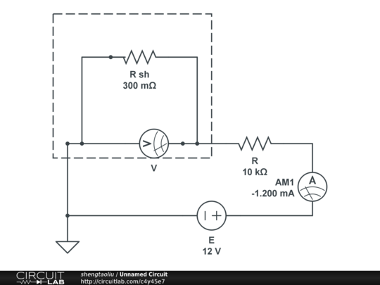

Pages
Each file in your source directory becomes a page. Wikven derives the page's title, and namespace, from the file's path, so the file name is how you choose them.
From file name to page
A file ending in .wikitext becomes a wiki page whose title is the path with .wikitext removed, so src/Help.wikitext is the page "Help", served at Help.html.
Titles are kept as written: spaces stay spaces (name the file Getting Started.wikitext, not with an underscore), and the first letter keeps its case. The title is where a space survives; the file it builds to is Getting_Started.html, because MediaWiki writes a space in a title as an underscore in a path. Name your entry page index so it builds to index.html, the file a static host serves at the site root.
If a file name does not map cleanly to a title (MediaWiki would normalise it differently), the build warns, because the page's edit and history links are derived from the file name and would otherwise not resolve. Rename the file to a title that is already normalised.
Linking between pages
Link with [[Title]], or [[Title|label]], the standard wikitext link. Wikven rewrites these to the matching .html paths in the static output, so internal links work with no server.
Subpages
Put a file in a subdirectory to create a subpage: src/Guide/Setup.wikitext becomes the page "Guide/Setup". Images in a subdirectory are imported too, but a picture is named by its file name alone -- src/Guide/diagram.png is diagram.png. The build stops and names both rather than publish one page showing the other's picture. An image has to be a file rather than a link to one, for the same reason: what a link points at is not part of what you are publishing, and the build refuses it by name instead of uploading it.
{kind=link}
Names a subpage cannot take
A subpage is a directory in the output, and some directories there are the build's own. A page that lands on one is not refused; the file is written where something else already goes, and what the reader gets is whichever finished last. Only subpages are affected, because only a subpage makes a directory: a page named citizen builds to citizen.html and sits beside everything else quite happily.
- Any skin after the first
- Each one renders the whole site into a directory of its own, so a site building Citizen has a
citizen/holding a second copy of every page. A page "citizen/Setup" is written into that directory, where the Citizen copy of a page "Setup" also goes. The name to avoid is the skin's own, which is lower-case and not always what you listed it by:vector-2022,citizen,minerva. See Skins. assets- Everything the build generates — the stylesheets, the script bundles, and the images their CSS names — unless
WikvenAssetDirectorynames another directory, or.to scatter them through the output root instead. fonts- The webfont files themselves, with
WikvenBundleWebfontsset. They sit at the output root rather than in the asset directory, and the stylesheet that names them steps up out of it to reach them. pagefind- Where search writes its index, unless
SifterSearchOutputDirputs it elsewhere. history- Removed from the output at the end of every pass, with a line saying so. A static host has no page histories to serve, so nothing is expected to be there.
A translation is not a subpage
A translatable page -- one whose source wraps content in <translate> -- claims a subpage of itself named for a language when that subpage carries the source's <!--T:n--> markers. Beside a translatable Guide.wikitext, a marked Guide/ko.wikitext is the Korean translation of "Guide" and not a page "Guide/ko", and nothing warns about it, because that naming is what the feature is built on. Without the markers it is a page as written, since language codes are ordinary words too -- id, no, it -- and a page about identifiers should not become an Indonesian translation.
All three have to hold at once, so any one of them is the way out: a subpage of a page carrying no <translate> is a subpage as written, so is any name that is not a language code, and so is any file without the markers. See Translating for how a translation gets them.
Namespaces
Prefix the file name with a namespace to place the page there:
Template:Infobox.wikitextis the template "Template:Infobox" (see Templates).File:Logo.png.wikitextis the description page for an uploadedLogo.png(see Images).MediaWiki:Common.cssandMediaWiki:Common.jsare the site-wide stylesheet and script (see JavaScript). These keep their extension and need no.wikitextmarker, because the name already carries the content type.
Categories
Add [[Category:Name]] to a page to categorise it; the categories show in the page footer, as on any wiki.
A category's own page is not exported by default, though. Wikven writes only content pages to the static site, and counts just the main and File: namespaces as content. (Namespaces have numeric IDs: main is 0, File: is 6, and Category is 14.) So a footer category links to a Category:Name.html the static host does not serve, a dead link, until you export the category page. To do that, set ContentNamespaces in your .wikven.yaml file and add a Category:Name.wikitext file to your source:
config:
ContentNamespaces: [0, 6, 14]
This key replaces the default rather than extending it, so keep 0 and 6 in the list, or the main and File: pages stop being exported.
To keep a maintenance or tracking category out of the footer instead, add the __HIDDENCAT__ magic word to its category page; a static export has no logged-in readers, so a hidden category is off the footer for everyone.
Templates
Put a Template:Name.wikitext file in your source and use it on any page as {{Name}}. For example, this file:
'''Note:''' {{{1}}}
saved as Template:Note.wikitext and used on a page as:
{{Note|Rebuild the site after every edit.}}
renders as "Note: Rebuild the site after every edit." Templates take positional ({{{1}}}) and named parameters and run parser functions exactly as in MediaWiki. The syntax itself is standard MediaWiki; see Help:Templates.
Variables
MediaWiki's own magic words work as they do anywhere — {{PAGENAME}}, {{SITENAME}}, {{CURRENTVERSION}} for the MediaWiki the build ran on. Wikven adds one of its own:
{{WIKVENVERSION}}- The version of Wikven that built the page —
1.0.0on this site. Use it where a page has to name the version rather than have someone remember to change a number: a footer saying what made the site, or a documentation page telling readers which tag to pin. It is the number in Wikven's ownextension.json, which is the same number the released tag carries.